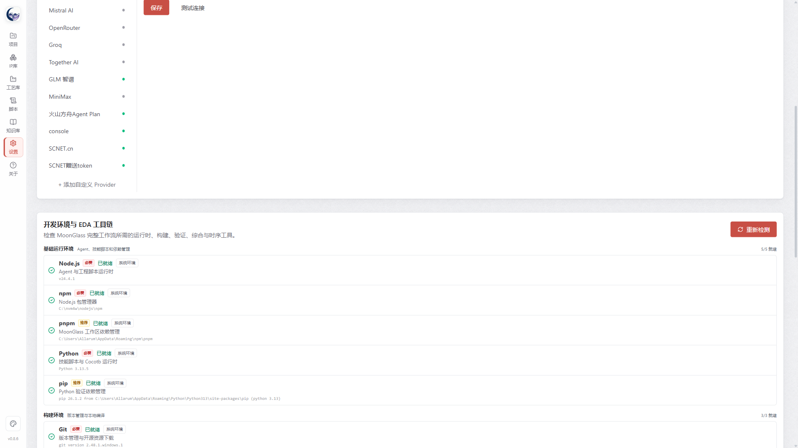
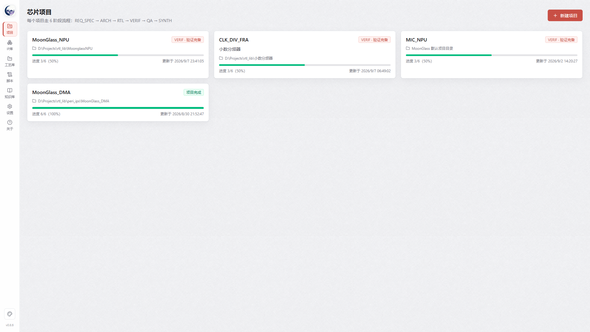

1. MoonGlass 是什么
MoonGlass 是面向 ASIC/IP 工程的 Agent 工作区。它把大模型的编码能力放进可追踪的芯片开发流程中，让 Agent 负责大量文档、RTL、测试、日志整理与回归执行，让工程师把注意力放在规格取舍、架构选择、Corner Case 和签核判断上。
IP 设计工程师
把接口、性能和约束逐步转为架构、RTL、Lint、CDC、回归与综合证据。
验证工程师
从规格提取 Verification Intent，组织场景、Checker、Golden Model、覆盖率、Formal 与失败诊断。
架构师
快速形成可运行的设计 Demo，比较方案，并通过综合结果评估面积、频率与实现风险。
项目负责人
查看阶段状态、变更影响、风险热区、门禁结论和可审计交付报告。
2. 产品全景
每个阶段都有目标、建议操作、输出物与推进门禁。门禁不是替你宣布“设计正确”，而是防止在关键证据缺失时无意识地继续推进。
需求描述
既有工程
IP/VIP 库
约束与工具
规格与架构
RTL 与测试
覆盖/Formal 证据
质量与综合报告
3. 首次启动：先完成两类配置
1解压并启动
- 完整解压 Windows x64 绿色版 ZIP，不要直接在压缩包预览器中运行。
- 双击
MoonGlass.exe；项目与配置数据保存在用户数据目录或你指定的项目目录中。 - 首次启动后先进入左侧“设置”，不要急着新建复杂项目。
2配置模型服务
- 新增或启用 Provider，填写名称、Base URL 和 API Key。
- 填写该 Provider 实际可调用的模型 ID。模型列表接口不可用时，MoonGlass 会逐个用最小推理请求测试模型。
- 点击“测试连接”，确认 Provider 和目标模型均为 PASS，再保存。
- API Key 只保存在本机；发布工程或绿色版前仍应做密钥扫描。
3检测开发环境与 EDA 工具链
设置页会检测 Node.js、Python 和可用 EDA 工具。内置工具优先直接使用，系统已有安装也可以被识别。环境结果会缓存，只有环境指纹变化、用户刷新或缓存失效时才重新完整检测。
| 工具 | 主要用途 | 新手如何理解 |
|---|---|---|
| Verible / Slang | 语法、风格、SystemVerilog 前端检查 | 先发现“代码读不通”与常见结构问题 |
| Yosys | 可综合性检查、开源综合 | 判断 RTL 是否能进入逻辑实现 |
| Verilator | 高速仿真、Lint、覆盖率 | 适合大回归和行/分支/条件等结构覆盖 |
| Icarus Verilog + Cocotb | 事件仿真与 Python 测试 | 快速搭建功能用例、驱动和 Checker |
| SymbiYosys + SMT Solver | 开源 Formal/BMC | 对适配语法的性质做有界证明或反例搜索 |
| GTKWave | 查看 VCD/FST 波形 | 从失败周期定位信号行为 |

4. 创建、导入与迁移项目
新建项目
- 点击“新建项目”，填写项目名和项目描述。描述应包含功能、接口、关键性能、时钟复位、异常行为与交付目标。
- 选择项目目录；留空则使用 MoonGlass 默认目录。
- 创建后进入 REQ_SPEC，先让 Agent 澄清需求，不要直接要求一次性写完全部 RTL。
导入已有项目
选择已有工程目录后，MoonGlass 会识别 RTL、文档、验证结果与综合产物，并推断实际阶段。文件树不必预先改造成 MoonGlass 标准结构；导入过程应优先补齐缺失的规范目录，不覆盖已有文件。
迁移项目
使用项目迁移将工程复制或移动到新路径，并同步 MoonGlass 的项目引用。迁移前应停止正在写文件的 Agent/EDA 任务，并保留一次版本控制提交或独立备份。

5. 工作区怎么用
全局导航
项目文件树
设置/IP库
模型选择
总体报告
设计浏览器
验证态势
阶段按钮显示状态：未开始、当前、已完成，以及由前置变更引发的黄色感叹号。双击已完成阶段可回看，不会立即丢弃后续结果；只有真正修改前置阶段产物后，后续已完成阶段才进入“待响应变更”。

6. 六阶段流程：每一步在做什么
| 阶段 | 核心问题 | 典型输出 | 推进前重点检查 |
|---|---|---|---|
| REQ_SPEC 需求-规格定义 | 要做什么、边界是什么、怎样算满足？ | 项目章程、产品需求、模块规格、接口规格、需求-规格矩阵 | 稳定 ID、接口/时序/异常语义、可验证验收条件 |
| ARCH 架构设计 | 怎样分解，数据/控制如何流动，风险在哪里？ | 架构说明、模块分解、寄存器图、时钟复位、关键决策 | 每项规格有落点；简单模块可按适用性省略微架构或独立时钟复位文档 |
| RTL RTL 开发 | 架构如何变成可读、可综合、可验证的实现？ | Verilog/SystemVerilog、文件清单、Lint/CDC/综合冒烟结果 | RTL 文件真实存在；顶层可展开；无关键语法、Lint 和 CDC 阻断 |
| VERIF 验证完备 | 如何用独立证据证明主要功能与风险已经闭环？ | Intent、验证计划、场景、测试、Checker、Golden Model、覆盖、Formal、回归证据 | 失败可诊断；高风险 Intent 有证据；缺口有责任人与下一步 |
| QA 质量检查 | 证据是否一致、可追踪，变更是否被完整响应？ | 独立审查、追踪审计、变更审查、签核阻断项 | 不只接受 Agent 的“完成”描述，读取 RTL、测试、日志与覆盖原始证据 |
| SYNTH 综合实现 | 设计在目标约束下是否可实现，代价如何？ | SDC、综合日志、面积/时序报告、实现说明、最终报告 | 工艺与约束前提明确；开源估算不冒充商业 sign-off |
7. 与 Agent 协作
主会话与任务会话
主会话负责阶段端到端交付；任务/平行会话适合独立 Review、局部调查、替代方案或补充验证。两者可独立选择模型，切换页签不会取消另一会话的后台执行。
怎样下达一个好任务
示例：“修复 APB 读响应在 wait-state 下重复出队的问题；只修改
rtl/apb_bridge.v 及对应测试；不得改变寄存器地址；完成后运行 Lint、目标用例和相关回归，并给出失败前后证据。”理解会话里的过程
- 思考过程与工具调用会流式显示；工具“成功”只表示调用完成，不等于工程目标完成。
- 写文件输出应能点击打开；若只在思考中列出文件而目录中不存在，说明尚未形成实际产物。
- 一轮结束后切换模型，下一轮使用新选择的模型；会话模型与历史消息均会持久化。
- 上下文过长或方向明显偏离时，可“压缩上下文”保留摘要，或“重启会话”建立不带旧 session 的新任务。
- “中止”会取消当前 Agent 运行；外部 EDA 子进程的退出可能有短暂延迟，应观察运行状态和进程结果。
多个确认项
当 Agent 提出多个选择时，应完成全部选择后再继续，而不是点任意一项就进入下一轮。对大规格影响、接口破坏或交付风险进行人工确认；局部 RTL 修复可在边界明确时自动执行。
8. 文件、代码、波形与设计浏览
- 双击项目树中的文本文件，在页签中打开；查看器支持行号、语法高亮、自动换行、字号调整、复制和 Ctrl+F 查找。
- 会话里的绝对 Windows 路径应包含盘符，例如
D:\Projects\demo\rtl\top.v，点击后直接定位文件。 - 双击
.vcd/.fst可调用 GTKWave；若 GUI 未弹出，先在 PowerShell 中用同一完整路径验证工具与文件兼容性。 - RTL Design Browser 展示 Top、模块层次、实例、端口和连接追踪；大型阵列层次可展开/收起，首次解析会比普通文本打开更慢。

9. IP 模板库：从“目录”变成可检索资产
- 在“IP 库”中选择一个目标路径，MoonGlass 递归发现其中一个或多个 RTL IP、VIP、BFM、宏单元与文档。
- 先建立确定性索引：文件、顶层、端口、协议线索、语言与依赖。
- 再由 Pi 做语义增强，形成用途、接口角色、参数、适用条件、风险和置信度说明。语义增强失败不应破坏基础索引。
- ARCH、RTL 与 VERIF Agent 可优先检索库内候选；候选不满足当前规格、许可、工艺或质量要求时必须拒用。
10. AIGV：MoonGlass 怎样组织验证
AIGV 的核心不是生成更多测试文件，而是把规格语义变成可审计的验证闭环：
Verification Intent
用自然语言说明“在什么前提下，DUT 必须表现出什么行为，怎样观察结果”。不是只有 Error/Normal 之类分类标签。
Checker / Golden Model
Checker 判断协议与不变量；Golden Model 给出期望功能结果。是否用于子模块取决于其角色、算法复杂度和风险。
Coverage
结构覆盖回答“代码走过哪里”，功能覆盖回答“规格空间走过哪里”。二者都不能单独证明正确。
Formal
对适合的性质做证明或反例搜索。工具解析失败属于工具限制，不能登记为 PASS，也不能误判为 RTL 缺陷。
模块分层策略
| 层级 | 默认验证深度 | 何时增强 |
|---|---|---|
| 叶子/低风险子模块 | Lint + 定向冒烟 + 顶层间接覆盖 | 高扇出、复杂状态、曾发生缺陷或难以从顶层观测 |
| 关键功能子模块 | 定向测试 + Checker；按需 Golden Model/Property | 算法、仲裁、协议、缓存、一致性、安全相关逻辑 |
| 顶层/集成层 | 完整 Intent、场景、回归、覆盖、错误注入和端到端证据 | 始终作为主要签核面 |
11. 验证态势：先看什么，再做什么
验证态势把分散在文档、JSON、日志和覆盖报告中的信息整理为工程决策页。推荐阅读顺序：
- 总体签核状态：先判断 PASS、条件通过还是被阻断。
- 最高风险与阻断项：看具体对象、证据、影响和建议动作，不只看数量。
- Spec Gap：哪些规格缺少可验证语义，或没有落到 Intent。
- Intent 闭环：哪些验证目标已有测试、Checker/Property、执行结果和证据。
- 风险热区：高影响、低覆盖、复杂或历史失败集中的模块/场景。
- Coverage Hole：哪些语义场景未被有效激励或观察，而非只看“覆盖率低”。
- 下一步行动：按优先级返回工作区，补规格、补激励、修 Checker、定位 RTL 或重跑回归。

12. 一键托管：让流程自动跑，但不跳过完成
一键托管可选择后续若干阶段，自动下达任务、等待 Agent 真正结束、检查产物和门禁、进行可恢复修复，再推进到下一阶段。正常流程不要求用户逐项点确认。
适合
- 规格边界清楚的小型/中型 IP；
- 已有稳定模板、测试基础和工具链；
- 夜间回归、文档补齐和重复性工程任务。
不适合完全无人值守
- 接口或微架构仍有重大分歧；
- 第三方 IP 许可、工艺库、时序目标尚未确定；
- 连续失败但错误证据不足，需要工程判断。
13. 变更、回退与彻底重做
前置阶段发生修改
回到早期阶段查看不会影响后续结果；当需求、规格或架构产物真实变更后，后续已完成阶段显示黄色感叹号。用户可以逐阶段响应变更，也可以从变更点重新托管到最终阶段。
清理某一阶段输出
“重置阶段”用于回到初始状态。MoonGlass 应先生成清理清单与备份/归档，再删除该阶段管理的输出，重置状态并标记下游待响应。不要把用户自建目录、共享 IP 或未经识别的资产一并删除。
Bug 修复流程
多轮修复仍无进展时，不要继续盲改 RTL。先把“最终输出错误”收敛为带周期、事务、状态和首次偏离点的证据，再决定修设计、测试还是环境。
14. 总体报告与最终签核
“生成总体报告”应汇总项目背景、规格基线、架构、RTL 清单、验证方法、覆盖、Formal、Lint/CDC、缺陷与豁免、综合约束和结果、变更历史、残余风险以及证据链接。
- 每个结论能追溯到原始文件、日志或结构化结果
- 工具错误、环境限制、产品缺陷明确分级
- PASS、FAIL、OPEN、WAIVED 不混用
- 开源工具预检查与商业 EDA 最终签核边界清楚
- 报告写清“尚未证明什么”，而不只写“完成了什么”
15. 一个适合新手的 30 分钟演练
建议先做一个小型 APB 定时器或同步 FIFO，不要用复杂 NPU/DMA 作为第一次体验。
- 0–3 分钟：确认模型和工具链状态均正常。
- 3–6 分钟：新建
APB_TIMER_DEMO，写清 APB 接口、计数位宽、中断和复位行为。 - 6–10 分钟：让主 Agent 生成需求、模块/接口规格和追踪矩阵；人工检查歧义。
- 10–14 分钟：推进 ARCH，确认寄存器表、计数状态、时钟复位与异常访问。
- 14–19 分钟：推进 RTL，要求实际写入源文件并运行 Lint/可综合检查。
- 19–25 分钟：在 VERIF 建立正常计数、使能关闭、溢出、中断清除、非法访问等 Intent 和测试。
- 25–28 分钟：打开验证态势，选择一个未闭环 Intent，按下一步指引补齐证据。
- 28–30 分钟：查看 RTL Design Browser、总体报告和阶段产物。
16. 常见问题
为什么一项任务会运行很久，但 Token 消耗不高？
可能卡在仿真、工具等待或同一失败的重复调试；缓存命中也会降低计费 Token。查看工具时间线、同类错误重复次数和最近一次有效产物，而不是只看 Token。
为什么门禁总提示追踪矩阵缺失？
常见原因是 Markdown 表格的版本历史、优先级统计或 TBD 表被误识别为追踪行。应使用结构化 ID 列、规范表头，并让解析器只检查正式矩阵区域。自动托管可修复格式类缺口，但不能伪造规格映射。
为什么 Formal 连续 ERROR？
先区分性质失败与前端解析失败。Yosys 开源前端并不支持全部 SVA 语法；解析错误应记录为工具限制并改用支持的等价 harness/语法，不能写成 BMC PASS。
出现 429 engine overloaded 是什么？
模型服务当前过载或限流。等待后重试、切换同 Provider 的可用模型，或在任务会话中选择另一个 Provider；它通常不是项目文件错误。
可以只用主会话吗？
可以。主会话应具备端到端交付能力；平行会话是补充性的独立 Review 和探索手段，不是完成项目的强制条件。
切换模型后究竟用哪个模型？
已完成的一轮保留原模型记录；在下拉框切换并保存后，下一轮使用新模型。重启软件后应恢复每个会话最后选择的模型。
17. 给新手的推荐实践
规格先可验证
少写“高性能、稳定”这类口号，多写条件、时序、范围、异常和可观察结果。
任务保持边界
一次只解决一个可验收目标，避免把连续六阶段无条件塞进同一个超长 Pi session。
先证据，后修复
连续失败时先改进 Checker、断言和可观测性，找到首次偏离点。
顶层为主，分层加深
完整流程集中在顶层与高风险路径；普通叶子模块做与风险匹配的轻量验证。
版本控制常提交
阶段推进、批量 Agent 修改、项目迁移和阶段清理前都保留可回退基线。
报告不等于真相
重要结论回到 RTL、测试、日志、波形、覆盖数据库和综合报告核验。
第一次使用检查表
- 绿色版已完整解压
- Provider 与目标模型测试 PASS
- EDA 工具状态已检查
- 项目目录可写且已纳入版本控制
- 项目描述包含接口、时钟复位、异常与交付目标
- 推进前人工抽查本阶段关键产物
- 验证结论包含语义 Intent 和原始证据
- 最终报告列出阻断项、豁免和残余风险